Suppose that you are already given a list that is partially filled. How would you complete it? In the activity with 4-digit numbers we had experienced this already. The idea is to find how the filled in part is arranged and use the same idea to complete the rest.
6.3.1 Sudoku
Sudoku is a number game. Completion with some constraints is best enjoyed in Sudoku. This is a puzzle where there is a partially filled in grid. Horizontal lines of cells in the grid are called as rows and vertical lines of cells in the grid are called as columns. In 9x9 Sudoku, you have to fill in the remaining blank cells with numbers from 1 to 9 so that no number repeats in a row, or in a column. In 3x3 Sudoku, you can use only the numbers from 1 to 3. In 4x4 Sudoku, you can use only the numbers from 1 to 4 and so on.
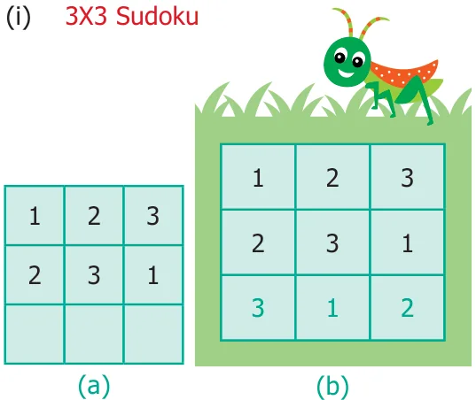
Sudoku
Do you know?
The word Sudoku comes from the Japanese language. Su means 'number' and Doku means 'single'. It refers to the condition that each number is listed only once in each row, column. The modern version of this puzzle is said to have come from Howard Garns.
In Fig, 6.8 (a) two rows are fixed. We get only one possible way to complete the third row (Fig. 6.8 (b)).
- 3X3 sudoku
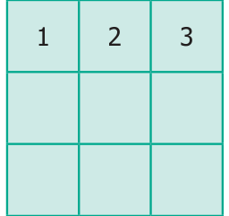
In the above 3 x 3 sudoku, the first row only is fixed. The second row can be filled in 2 ways either by 2 3 1 or 3 1 2
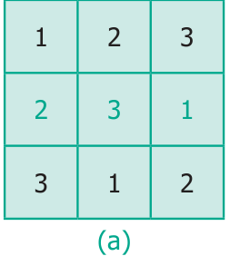
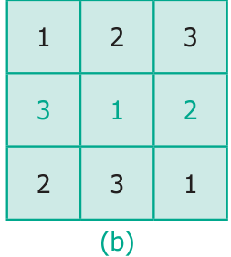
To fill the third row, bear in mind that numbers cannot be repeated in the row or in the column. The third row can be filled by only one way in each case.
- \(3 \times 3\) sudoku
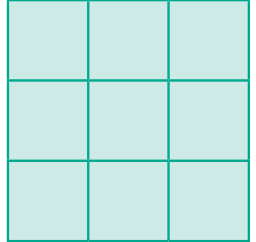
In how many different ways can the first row be arranged? The first row can be arranged in six ways as (1,2,3), (1,3,2), (2,1,3), (2,3,1), (3,1,2) and (3,2,1).
- Let us find all possible solutions to solve \(3 \times 3\) sudoku puzzle.
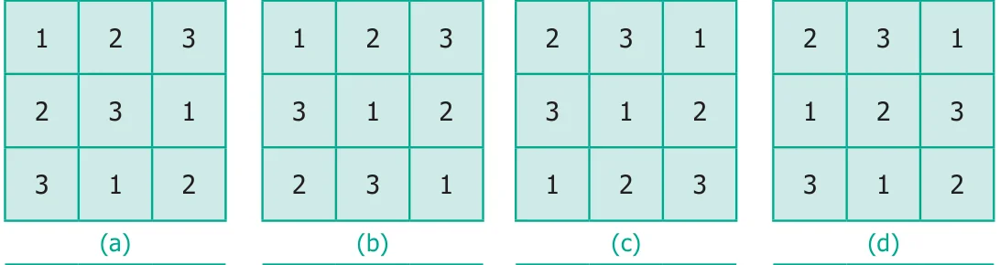
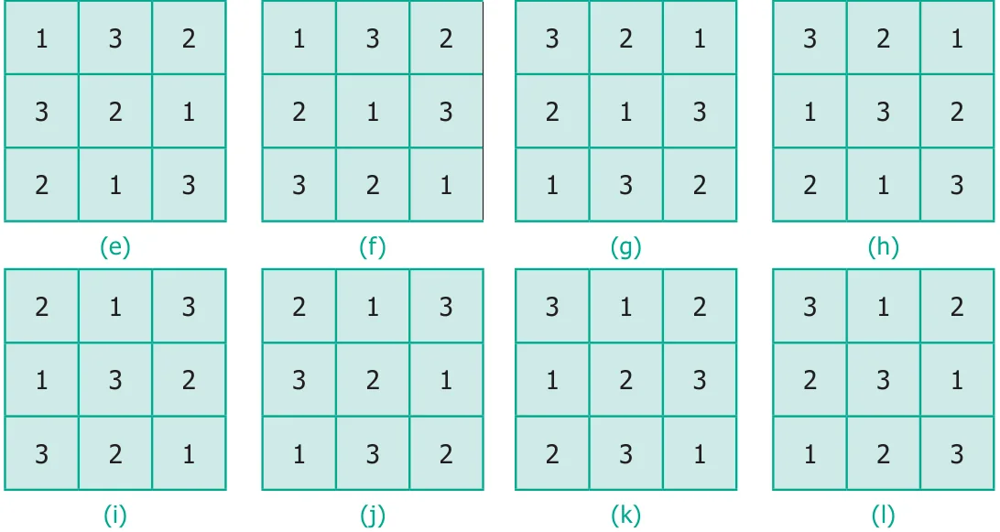
We get 12 possible ways.
- Here is a partially filled 4x4 sudoku.
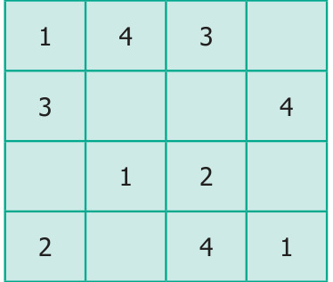
One way of completing it is given below. Is there any other way to complete the sudoku?
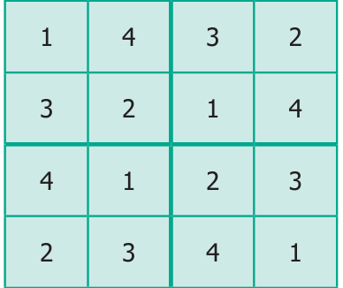
In the \(4 \times 4\) Sudoku, there is an extra condition. We have four \(2 \times 2\) grid boxes in the \(4 \times 4\) sudoku. You have to be careful that no number from 1 to 4 repeats within that \(2 \times 2\) grid also.
6.3.2 Magic triangle
Magic triangles are also very interesting in a similar way.
In a magic triangle, numbers are to be filled without repetition on the sides of a triangle. So that the sum of each side remains the same.
Fill up the circle with the numbers from 1 to 6 without repetition so that each side of the magic triangle adds upto 12.
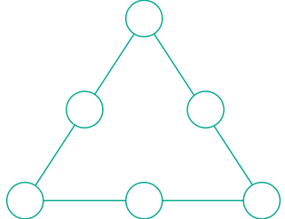
Step 1: Place the larger numbers at the corners of the triangle i.e., 4 ,5, and 6. Step 2: Place the smaller numbers i.e., 1,2 and 3 in the middle of each side.
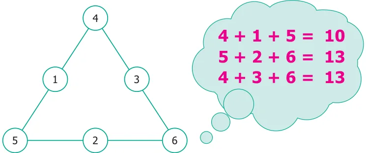
Wrong Placement of numbers (first row 4, second row 1, 3 and third row 5, 2, 6) Sum of the numbers on three sides of the triangle are 10, 13 and 13. All the total are not the same. This placement of numbers is not correct.
Try the other way, by changing the numbers as shown in the figure, given below.
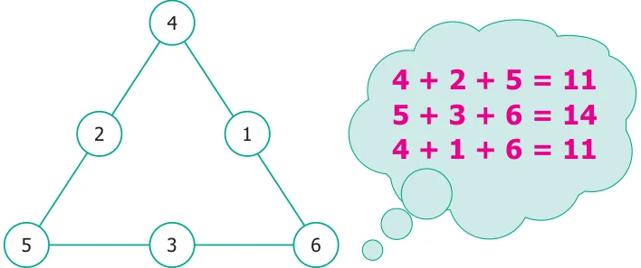
Wrong Placement of numbers (first row 4, second row 2, 1 and third row 5, 3, 6)
Sums of the numbers on three sides of the triangle are 11, 14 and 11. Again, the totals are not the same.
Try again. Change the numbers to get a total of 12 on each side.
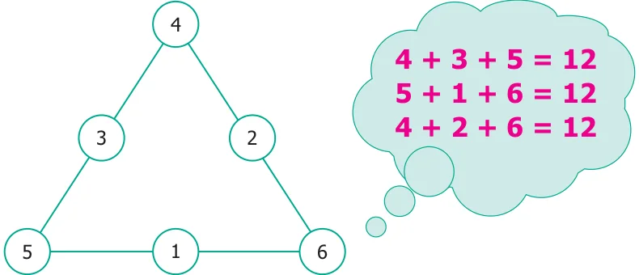
Correct placement of numbers. (first row 4, second row 3, 2 and third row 5, 1, 6) This is the desired magic triangle.
6.3.3 More figures in a figure
Examples
How many triangles are there in the given figures?
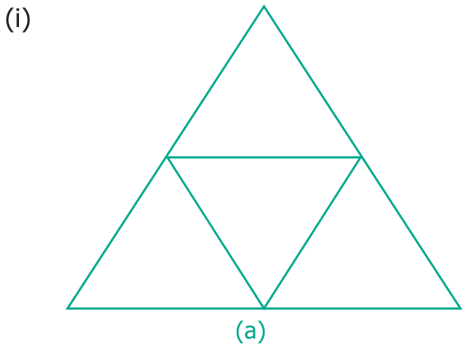
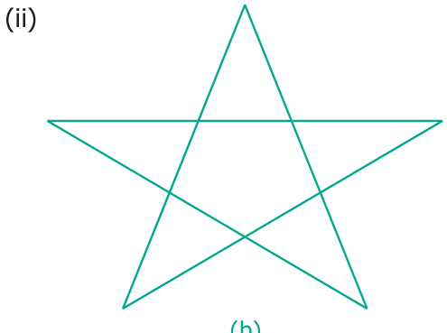
(i) Solution
A, B, C, D are four triangles.
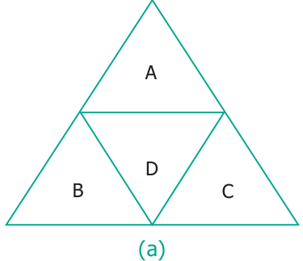
Combining A & D, B & D and D & C do not form any triangles.
Combining A, B & D; A, C & D and B, D & C also do not form any triangles.
Combining A, B, C
\(D = 1\) triangle ` Total number of triangles \(= 4 + 1 = 5\)
(ii) Solution

A, B, C, D, & E are five triangles.
No combination of these triangles taken 2 at a time, form any triangle.
Only the combinations of A, F & C; A, F & D; B, F & E; B, F & D and C, F & E form triangles when taken 3 triangles at a time. Hence, the total number of triangles \(= 5 + 5 = 10\).


- Suppose, you have two shorts, one is black and the other one is blue; three shirts which are in white, blue and red. You again wish to make different combinations, but you always want to make sure that the shorts and shirt that you wear are of different colours. List and check how many combinations are possible now.
- You have two red and two blue blocks. How many different towers can you build that are four blocks high using these blocks? List all the possibilities.
- In the following magic triangle, arrange the numbers from 1 to 6, so that you get the same sum on all its sides.


- Using the numbers from 1 to 9
- Can you form a magic triangle?
- How many magic triangles can be formed?
- What are the sums of the sides of the magic triangle?
- Arrange the odd numbers from 1 to 17 without repetition to get a sum of 30 on each side of the magic triangle.
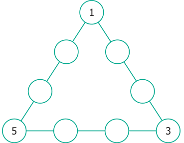